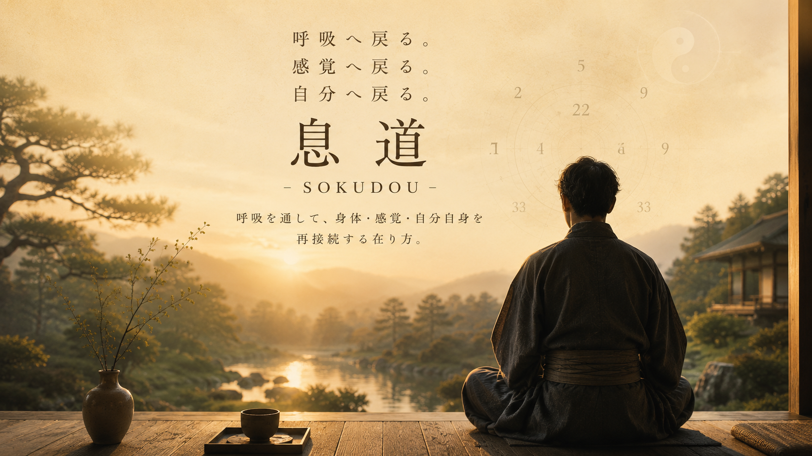

呼吸は、整えるものではなく、戻るものです。
息道とは、呼吸を通して自分の感覚へ戻る道です。
深呼吸の練習でも、メンタルトレーニングでもありません。
身体がすでに知っていることを、もう一度思い出すための時間です。
高校球児がベンチから外野まで声を届かせるために腹の底から声を出していた。
約30年ほど前、舞台の上で声を届けていた。
マイクのない小劇場で、どんな状態でも声を出し続けるために身に付けた呼吸です。
教えるために学んだのではなく、自分が続けるために掘り続けた。
殺陣は舞台上の表現。この動きには呼吸が深く関わっている。
自分が動くときはもちろん、味方役とのコンマ数秒差の動き合わせ、敵役との手数を重ねる間。
そして、決着の瞬間、生き切る、事切れる瞬間まで。勝つも負けるも、全て呼吸が噛み合わなくては成立しない。
胃がん手術の経験から、この呼吸が自分を助けてくれている。
息道は、その道のりから形成されました。